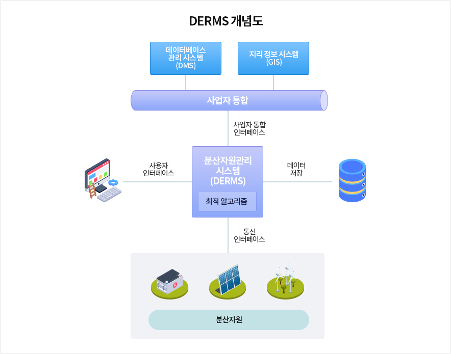

DERMS(Distributed Energy Resource Management System, 분산자원관리시스템)
- DERMS 개요
- DERMS는 통신장치를 통해 분산자원의 상태, 전류전압 및 고장유무 등의 정보를 실시간으로 취득하고, 분산자원 장치를 원격으로 모니터링하고
제어하는 하드웨어 및 또는 소프트웨어 통합 플랫폼을 통칭
- 다양한 분산자원의 실시간 운영 및 관리하는 시스템으로써 감시제어, 네트워크 분석, 계통망 최적화, 정전관리 등 다양한 기능을 제공
- 분산자원이 증가함에 따라 DMS를 사용하여 제어 관리 가능하나, DMS는 단일 대형 소프트웨어가 많은 회로를 관리하는 유틸리티 운영 센터에
상주하거나 소형 시스템이 단일 공급기 또는 회로 관리 역할을 하는 변전소와 같은 제한된 방식으로 구현 가능한 한계가 있음
- 또한 기존의 DMS은 반복적인 전력 흐름 분석을 통해 현재 배전 사업자들의 요구와 우선순위를 기반으로 제어장치의 설정을 최적화하는 반면,
DEMRS는 분산자원 각각의 세분화된 제어와 다양한 분산전원의 통합관리를 위한 공통 계통지원 서비스 및 정보를 정의함으로써 보다 관리하기
쉬운 서비스 집합을 제시함
-
